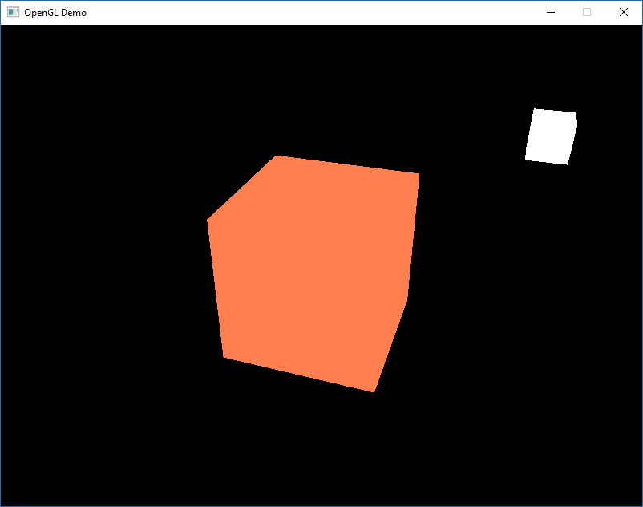

Colors
Source:
Colors
We briefly mentioned how to work with colors in OpenGL in the previous classes, but so far only touched the surface of colors.
During the next classes we'll extensively discuss what colors are and start building the scene for lighting.
In the real world, colors can take practically any known color value with each object having its own color(s).
In the digital world we need to map the (infinite) real colors to (limited) digital values and therefore not all real-world colors can be represented digitally.
We can however represent so many colors that you probably won't notice the difference anyways. Colors are digitally represented using a red, green and blue component commonly abbreviated as RGB.
Using different combinations of just those 3 values we can represent almost any color there is. For example, to get a coral color we define a color vector as:
glm::vec3 coral(1.0f, 0.5f, 0.31f);The colors we see in real life are not the colors the objects actually have, but are the colors
For example, the light of the sun is perceived as a white light that is the combined sum of many different colors.
So if we would shine the white light on a blue toy, it absorbs all the white color's sub-colors except the blue color.
Since the toy does not absorb the blue value, it is reflected and this reflected light enters our eye, making it look like the toy has a blue color.
The following image shows this for a coral colored toy where it reflects several colors with varying intensity:

You can see that the white sunlight is actually a collection of all the visible colors and the object absorbs a large portion of those colors.
It only reflects those colors that represent the object's color and the combination of those is what we perceive (in this case a coral color).
These rules of color reflection apply directly in graphics-land.
When we define a light source in OpenGL we want to give this light source a color.
In the previous slide we had a white color so we'll give the light source a white color as well.
If we would then multiply the light source's color with an object's color value, the resulting color is the reflected color of the object (and thus its perceived color).
Let's revisit our toy (this time with a coral value) and see how we would calculate its perceivable color in graphics-land.
We retrieve the resulting color vector by doing a component-wise multiplication on both color vectors:
glm::vec3 lightColor(1.0f, 1.0f, 1.0f);
glm::vec3 toyColor(1.0f, 0.5f, 0.31f);
glm::vec3 result = lightColor * toyColor; // = (1.0f, 0.5f, 0.31f);
glm::vec3 lightColor(1.0f, 1.0f, 1.0f);
glm::vec3 toyColor(1.0f, 0.5f, 0.31f);
glm::vec3 result = lightColor * toyColor; // = (1.0f, 0.5f, 0.31f);
We can see that the toy's color absorbs a large portion of the white light, but reflects several red, green and blue values based on its own color value.
This is a representation of how colors would work in real life.
We can thus define an object's color as the amount of each color component it reflects from a light source.
Now what would happen if we used a green light?
glm::vec3 lightColor(0.0f, 1.0f, 0.0f);
glm::vec3 toyColor(1.0f, 0.5f, 0.31f);
glm::vec3 result = lightColor * toyColor; // = (0.0f, 0.5f, 0.0f);
As we can see, the toy has no red and blue light to absorb and/or reflect the toy also absorbs half of the light's green value, but also still reflects half of the light's green value.
The toy's color we perceive would then be a dark-greenish color:
We can see that if we use a green light, only the green color components can be reflected and thus perceived; no red and blue colors are perceived.
The result is that the coral object suddenly becomes a dark-greenish object.
Let's try one more example with a dark olive-green light:
glm::vec3 lightColor(0.33f, 0.42f, 0.18f);
glm::vec3 toyColor(1.0f, 0.5f, 0.31f);
glm::vec3 result = lightColor * toyColor; // = (0.33f, 0.21f, 0.06f);
glm::vec3 lightColor(0.33f, 0.42f, 0.18f);
glm::vec3 toyColor(1.0f, 0.5f, 0.31f);
glm::vec3 result = lightColor * toyColor; // = (0.33f, 0.21f, 0.06f);
As you can see, we can get unexpected colors from objects by using different light colors.
It's not hard to get creative with colors.
But enough about colors, let's start building a scene where we can experiment in.
A lighting scene
In the upcoming classes we'll be creating interesting visuals by simulating real-world lighting making extensive use of colors.
Since now we'll be using light sources we want to display them as visual objects in the scene and add at least one object to simulate the lighting on.
The first thing we need is an object to cast the light on and we'll use the infamous container cube from the previous classes.
We will also be needing a light object to show where the light source is located in the 3D scene.
For simplicity's sake we'll represent the light source with a cube as well. Here is the vertex data:
float vertices[] = {
-0.5f, -0.5f, -0.5f,
0.5f, -0.5f, -0.5f,
0.5f, 0.5f, -0.5f,
0.5f, 0.5f, -0.5f,
-0.5f, 0.5f, -0.5f,
-0.5f, -0.5f, -0.5f,
-0.5f, -0.5f, 0.5f,
0.5f, -0.5f, 0.5f,
0.5f, 0.5f, 0.5f,
0.5f, 0.5f, 0.5f,
-0.5f, 0.5f, 0.5f,
-0.5f, -0.5f, 0.5f,
-0.5f, 0.5f, 0.5f,
-0.5f, 0.5f, -0.5f,
-0.5f, -0.5f, -0.5f,
-0.5f, -0.5f, -0.5f,
-0.5f, -0.5f, 0.5f,
-0.5f, 0.5f, 0.5f,
0.5f, 0.5f, 0.5f,
0.5f, 0.5f, -0.5f,
0.5f, -0.5f, -0.5f,
0.5f, -0.5f, -0.5f,
0.5f, -0.5f, 0.5f,
0.5f, 0.5f, 0.5f,
-0.5f, -0.5f, -0.5f,
0.5f, -0.5f, -0.5f,
0.5f, -0.5f, 0.5f,
0.5f, -0.5f, 0.5f,
-0.5f, -0.5f, 0.5f,
-0.5f, -0.5f, -0.5f,
-0.5f, 0.5f, -0.5f,
0.5f, 0.5f, -0.5f,
0.5f, 0.5f, 0.5f,
0.5f, 0.5f, 0.5f,
-0.5f, 0.5f, 0.5f,
-0.5f, 0.5f, -0.5f,
};The first thing we will actually need is a vertex shader to draw the container.
We'll be using a stripped down version of the vertex shader from the last classes:
#version 330 core
in vec3 position;
uniform mat4 model;
uniform mat4 view;
uniform mat4 projection;
void main()
{
gl_Position = projection * view * model * vec4(position, 1.0);
}
Make sure to update your vertex data and attribute pointers to correspond with the new vertex shader.
shaderProgram.setVertexAttribPointer("position", 3, GL_FLOAT, GL_FALSE, 3 * sizeof(float), (void*)0);Because we are also going to create a lamp cube, we want to generate a new VAO specifically for the lamp.
We could also represent a lamp using the same VAO and then simply do some transformations on the model matrix, but in the upcoming classes we'll be changing the vertex data and attribute pointers of the container object quite often and we don't want these changes to propagate to the lamp object (we only care about the lamp's vertex positions), so we'll create a new VAO.
// First, configure the cube VAO and VBO
GLuint vao;
glGenVertexArrays(1, &vao);
glBindVertexArray(vao);
GLuint vbo;
glGenBuffers(1, &vbo);
glBindBuffer(GL_ARRAY_BUFFER, vbo);
glBufferData(GL_ARRAY_BUFFER, sizeof(vertices), vertices, GL_STATIC_DRAW);
shaderProgram.setVertexAttribPointer("position", 3, GL_FLOAT, GL_FALSE, 3 * sizeof(float), (void*)0);
// Second, configure the light's vao (vbo stays the same; the vertices are the same for the light object which is also a 3D cube)
GLuint lightCubeVao;
glGenVertexArrays(1, &lightCubeVao);
glBindVertexArray(lightCubeVao);
// we only need to bind to the VBO (to link it with glVertexAttribPointer), no need to fill it; the VBO's data already contains all we need (it's already bound, but we do it again for educational purposes)
glBindBuffer(GL_ARRAY_BUFFER, vbo);
lightingShader.setVertexAttribPointer("position", 3, GL_FLOAT, GL_FALSE, 3 * sizeof(float), (void*)0);Now that we created both the container and the lamp cube there is one thing left to define and that is the fragment shader:
#version 330 core
out vec4 FragColor;
uniform vec3 objectColor;
uniform vec3 lightColor;
void main()
{
FragColor = vec4(lightColor * objectColor, 1.0);
}The fragment shader accepts both an object color and a light color from a uniform variable. Here we multiply the light's color with the object's (reflected) color.
Let's set the object's color to the last section's coral color with a white light:
Shader lightingShader("shaders/vertex_shader.glsl", "shaders/reflectedColor_fragment_shader.glsl");
// don't forget to 'use' the corresponding shader program first (to set the uniform)
lightingShader.use();
lightingShader.set3Float("objectColor", 1.0f, 0.5f, 0.31f);
lightingShader.set3Float("lightColor", 1.0f, 1.0f, 1.0f);
One thing left to note is that when we start to change the vertex and fragment shaders, the lamp cube will change as well and this is not what we want.
We don't want the lamp object's color to be affected by the lighting calculations in the upcoming classes, but rather keep the lamp isolated from the rest.
We want the lamp to have a constant bright color, unaffected by other color changes (this makes it look like the lamp really is the source of the light).
To accomplish this we actually need to create a second set of shaders that we will use to draw the lamp, thus being safe from any changes to the lighting shaders.
The vertex shader is the same as the current vertex shader so you can simply copy the source code for the lamp's vertex shader.
The fragment shader of the lamp ensures the lamp's color stays bright by defining a constant white color on the lamp:
#version 330 core
out vec4 FragColor;
void main()
{
FragColor = vec4(1.0); // set all 4 vector values to 1.0
}
When we want to draw our objects, we want to draw the container object (or possibly many other objects) using the lighting shader we just defined and when we want to draw the lamp, we use the lamp's shaders.
During the next classes we'll gradually be updating the lighting shaders to slowly achieve more realistic results.
The main purpose of the lamp cube is to show where the light comes from.
We usually define a light source's position somewhere in the scene, but this is simply a position that has no visual meaning.
To show the actual lamp we draw the lamp cube at the same location of the light source. This is accomplished by drawing the lamp object with the lamp shader, ensuring the lamp cube always stays white, regardless of the light conditions of the scene.
So let's declare a global vec3 variable that represents the light source's location in world-space coordinates:
glm::vec3 lightPos(1.2f, 1.0f, 2.0f);We then want to translate the lamp's cube to the light source's position before drawing it and we'll also scale it down a bit to make sure the lamp isn't too dominant:
model = glm::mat4(1.0f);
model = glm::translate(model, lightPos);
model = glm::scale(model, glm::vec3(0.2f));
The resulting drawing code for the lamp should then look something like this:
lampShader.use();
// set the model, view and projection matrix uniforms
...
// draw the lamp object
glBindVertexArray(lightVAO);
glDrawArrays(GL_TRIANGLES, 0, 36);
Injecting all the code fragments at their appropriate locations would then result in a clean OpenGL application properly configured for experimenting with lighting.
If everything compiles it should look like this:
Initialization code:
// First, configure the cube VAO and VBO
GLuint vao;
glGenVertexArrays(1, &vao);
glBindVertexArray(vao);
GLuint vbo;
glGenBuffers(1, &vbo);
glBindBuffer(GL_ARRAY_BUFFER, vbo);
glBufferData(GL_ARRAY_BUFFER, sizeof(vertices), vertices, GL_STATIC_DRAW);
shaderProgram.setVertexAttribPointer("position", 3, GL_FLOAT, GL_FALSE, 3 * sizeof(float), (void*)0);
// Second, configure the light's vao (vbo stays the same; the vertices are the same for the light object which is also a 3D cube)
GLuint lightCubeVao;
glGenVertexArrays(1, &lightCubeVao);
glBindVertexArray(lightCubeVao);
// we only need to bind to the VBO (to link it with glVertexAttribPointer), no need to fill it; the VBO's data already contains all we need (it's already bound, but we do it again for educational purposes)
glBindBuffer(GL_ARRAY_BUFFER, vbo);
// don't forget to 'use' the corresponding shader program first (to set the uniform)
lightingShader.use();
lightingShader.setVertexAttribPointer("position", 3, GL_FLOAT, GL_FALSE, 3 * sizeof(float), (void*)0);
// be sure to activate shader when setting uniforms/drawing objects
shaderProgram.use();
shaderProgram.set3Float("objectColor", 1.0f, 0.5f, 0.31f);
shaderProgram.set3Float("lightColor", 1.0f, 1.0f, 1.0f);
glm::vec3 lightPos(1.2f, 1.0f, 0.0f);Game loop code:
glClear(GL_COLOR_BUFFER_BIT | GL_DEPTH_BUFFER_BIT);
shaderProgram.use();
glBindVertexArray(vao);
view = camera.getViewMatrix();
projection = glm::perspective(glm::radians(camera.getFov()), screenWidth / screenHeight, 0.1f, 100.0f);
shaderProgram.setMat4("view", view);
shaderProgram.setMat4("projection", projection);
// view/projection transformations
shaderProgram.setMat4("projection", projection);
shaderProgram.setMat4("view", view);
// world transformation
glm::mat4 model = glm::mat4(1.0f);
shaderProgram.setMat4("model", model);
// render the cube
glBindVertexArray(vao);
glDrawArrays(GL_TRIANGLES, 0, 36);
// also draw the lamp object
lightingShader.use();
lightingShader.setMat4("projection", projection);
lightingShader.setMat4("view", view);
model = glm::mat4(1.0f);
model = glm::translate(model, lightPos);
model = glm::scale(model, glm::vec3(0.2f)); // a smaller cube
lightingShader.setMat4("model", model);
glBindVertexArray(lightCubeVao);
glDrawArrays(GL_TRIANGLES, 0, 36);